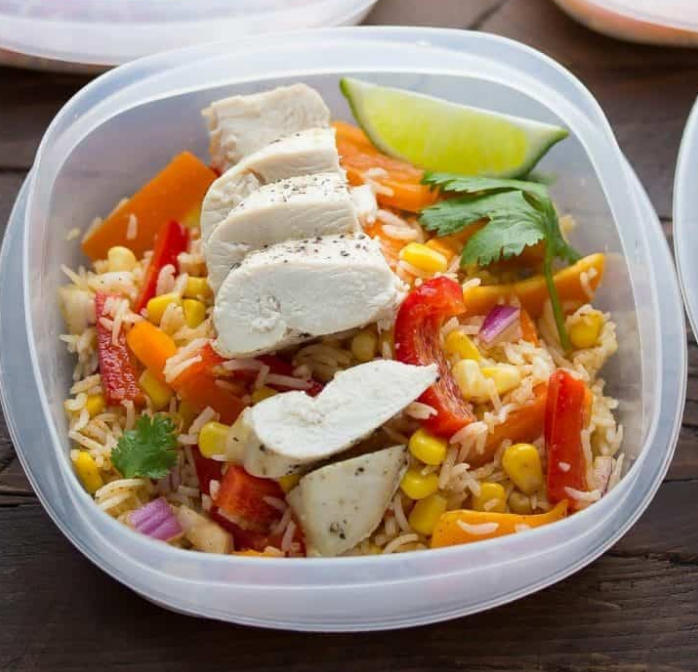

Chicken Fajita Lunch Bowls

A healthy make-ahead lunch
With healthy vegetables, protein and carbs, this is a complete and filling lunch that will fuel your body into the afternoon.
Inspired by a Mexican bean salad, this recipe combines bell peppers, baked chicken breast and rice with a delicious fajita-vinaigrette.
Ingredients
- 450g boneless chicken breasts
- 4 tbsp olive oil
- 3/4 cup uncooked basmati rice
- 2 bell peppers (sliced)
- 1/2 red onion (diced)
- 1 tin sweetcorn
- 1 tsp chilli powder
- 1/2 tsp paprika
- 1/2 tsp cumin
- 1 tbsp sugar
- 1 tbsp lime juice
- 1/4 tsp salt
- 3 tbsp white wine vinegar
- 1 lime
Steps
- Mash the banana in a mixing bowl